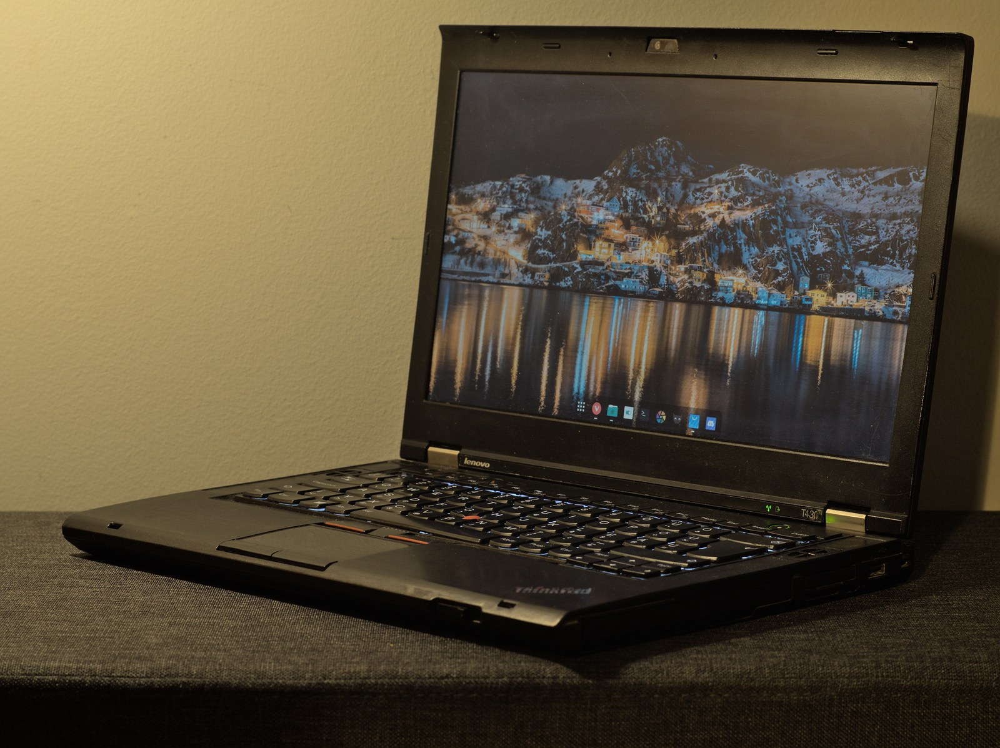

The Autopsy Report · Device #070
The ThinkPad T-Series
The business laptop against which all business laptops are measured — at the T420/T430 era, the Sandy Bridge / Ivy Bridge generation. Our representative is the T430: matte black, endlessly configurable, documented to the screw. T430 overview
What is this thing?
The ThinkPad T-series is Lenovo's flagship business laptop line — the 14-inch workhorse sold to enterprises, governments, and everyone who wanted a machine that could survive a commute. The T420/T430 era (2011–2012) is the one this report covers: the T420, T420s, and T520 arrived in 2011; the T430, T430s, and T530 followed in 2012. These are the Sandy Bridge / Ivy Bridge machines — 2nd and 3rd generation Intel Core — and they sit at a hinge point: modern enough to still be useful, old enough to be fully documented by the community. Our representative is the T430 (machine types 2344, 2350) — the one in the photo — and every chip row below is T430-specific. 2011 models · T430 overview
A scope note we take seriously: the T430 shipped in many configurations, and the community documentation reflects that. CPU, graphics, display, WLAN, and storage were all order-time options — so each row below says which configuration it describes. T430 PSREF (PDF) · T430 overview
Not yet on our bench
No ThinkPad has sat on our bench yet. No disassembly, no FRU replacement, no battery test, no original-unit photography. Everything below comes from Lenovo's own platform reference and regulatory documents, plus the community-maintained ThinkWiki hardware record — including real lspci output from a documented T430. When a T430 lands on the bench, this page gets its second act.
A short history
- 2011The T420 generation: Sandy Bridge (2nd-gen Core) across the 14-inch T420/T420s and 15-inch T520. The classic ThinkPad formula at full strength — matte display options, great keyboard, docking station. 2011 models
- 2012The T430 generation: Ivy Bridge (3rd-gen Core) joins the lineup alongside 2nd-gen options, NVIDIA NVS 5400M graphics as an option, USB 3.0 arrives. T430 overview
- The era's legacyThese machines became the used-market standard: cheap, repairable, with every FRU documented in Lenovo's Hardware Maintenance Manual and every quirk catalogued by the community. The T430 in particular is still a favorite for lightweight Linux duty. T430 overview
The outside
Matte black, soft-touch lid, red TrackPoint nub in the keyboard's center — if you've seen one ThinkPad you've almost seen them all, and that's the point. The T430 is 13.8 × 9.13 × 1.18 inches, 4.77 lbs, with a 14-inch display in HD (1366×768) or HD+ (1600×900) — both matte, both dim by modern standards (200/250 nits). Ports: 2× USB 3.0, always-on USB 2.0, Mini DisplayPort, VGA, Ethernet, ExpressCard, SD reader, and the Serial Ultrabay Enhanced — a swappable bay holding the DVD drive (or a second battery, or a drive caddy). Power comes from a 6-cell 57 Wh or 9-cell 94 Wh battery, with a slice battery option for the road warriors. T430 overview

The board
The T430's platform, per the community hardware record: 2nd- or 3rd-generation Intel Core processors (i3-2328M/2370M, i5-2520M/3210M/3230M/3320M/3360M, i7-3520M — configuration-dependent), Intel HD Graphics 4000 integrated, with an NVIDIA NVS 5400M discrete option using Optimus switching. Two DDR3 SODIMM slots, up to 16 GB. Storage: 320/500 GB spinning disks or 128/180 GB SATA SSDs. The sample unit's lspci shows the supporting cast directly: Intel 7-series chipset (QM77 LPC, SATA AHCI), Intel 82579LM Gigabit Ethernet, a Ricoh PCIe SDXC/MMC host controller, Intel Centrino Advanced-N 6205 wireless, and the Intel Management Engine interface (MEI) — present, as on all vPro-era business machines. WLAN options across configurations included Realtek-based and Intel Centrino (1000, 6250, 6300) cards. T430 overview incl. lspci · T430 PSREF (PDF)
Under the microscope: the chips
All rows are T430-specific; configuration-dependent options are labeled. Confirmed means Lenovo's PSREF, Lenovo's regulatory notice, or the community lspci record states it directly.
| Chip | What it does | How we know | Dig deeper |
|---|---|---|---|
| Intel Core i3/i5/i7 2nd/3rd gen — configuration-dependent |
The processor. Options ranged from i3-2328M to i7-3520M. | Confirmed ThinkWiki T430 standard features; PSREF. | T430 overview |
| Intel 7-series chipset (QM77) | Platform controller — SATA, USB, LPC, SMBus. | Confirmed Sample unit's lspci: QM77 Express Chipset LPC Controller. | T430 lspci |
| Intel HD Graphics 4000 / NVIDIA NVS 5400M discrete GPU optional |
Integrated graphics standard; NVIDIA with Optimus switching on configured units. | Confirmed ThinkWiki standard features; PSREF. | T430 PSREF (PDF) |
| Intel 82579LM | Gigabit Ethernet. | Confirmed Sample unit's lspci; PSREF lists the 82577/82579 family as options. | T430 lspci |
| Intel Centrino Advanced-N 6205 sample unit; options varied |
Wi-Fi. Configuration options also included Realtek-based and other Centrino cards. | Confirmed Sample unit's lspci; options from ThinkWiki/PSREF. | T430 overview |
| Ricoh PCIe SDXC/MMC controller | The SD card reader. | Confirmed Sample unit's lspci. | T430 lspci |
| Intel Management Engine interface | The ME controller — present on this vPro-era business platform. | Confirmed Sample unit's lspci (MEI Controller #1). | T430 lspci |
The government's file
Precision matters here, so read carefully: there is no single host-wide T430 FCC ID. What Lenovo's regulatory notice documents is the set of approved radio modules for the T430 platform: WLAN/WiMAX module IDs TX2-RTL8188CE, PD962205ANHU, PD92200BNHU, PD9633ANHU, and PD9622ANXHU, plus integrated Bluetooth module QDS-BRCM1046LE. These are the modules' certifications — the radios inside the machine — not a filing for the laptop as a whole. Any source that presents one of these as "the T430's FCC ID" is misreading the paperwork. (An earlier draft of this report carried a mistyped module ID; Lenovo's notice is the authority, and it's corrected here.) Lenovo regulatory notice (PDF)
Listening, not knocking
Our posture: we listen, we don't knock. The T430's documented service path is Lenovo's own Hardware Maintenance Manual — the FRU-by-FRU bible that tells a technician exactly which screws to remove and in what order. That's the manufacturer's procedure, and citing its existence is the whole of this section. Two honest notes: we will not assume modern F10 UEFI-diagnostic behavior applies to this BIOS-era machine without model-era documentation, and the Intel Management Engine interface visible in lspci is documented here as present — its configuration is a listening-only observation, never a target. When a T430 reaches our bench: HMM-guided inspection, a pre-boot diagnostic run per the era's documented procedure, and published results. Listening only. T430 resources (incl. HMM)
What we didn't do
- No bench work yet: no disassembly, no diagnostics, no battery test, no original-unit photos.
- We claim no host-wide FCC ID — Lenovo's paperwork certifies modules, and we say so.
- We did not bypass any supervisor password, Computrace, or ME configuration — and we never will.
- Nothing here touches credentials, keys, or user data.
By the numbers
- Line: ThinkPad T-series (business laptops) T430 overview
- Representative: ThinkPad T430 — machine types 2344, 2350 (2012) T430 overview
- Platform: 2nd/3rd-gen Intel Core, Intel 7-series/QM77, HD 4000 (NVS 5400M optional) T430 overview
- Memory: 2× DDR3 SODIMM, up to 16 GB T430 overview
- Display: 14.0" HD 1366×768 (200 nits) or HD+ 1600×900 (250 nits) T430 overview
- Radios: module IDs per Lenovo's regulatory notice (see above); Bluetooth QDS-BRCM1046LE Lenovo regulatory notice (PDF)
- Size/weight: 13.8 × 9.13 × 1.18 in, 4.77 lbs T430 overview
What awaits the bench
- A T430 of our own — machine type, exact configuration, our photos.
- An HMM-guided teardown with FRU documentation.
- Pre-boot diagnostics per the era's documented procedure, results published.
- Battery health on a decade-old pack — the honest numbers.
- A regulatory-label photo to document exactly what compliance markings that unit carries.
Words to know
Every term this page uses, in plain English. No prior knowledge required.
- FRU
- Field-replaceable unit — a part a technician is meant to swap. Lenovo's manual lists every one.
- Optimus
- NVIDIA's technology for switching between integrated and discrete graphics to save power.
- Ultrabay
- ThinkPad's swappable drive bay — DVD drive, second battery, or extra storage, your choice.
- mSATA
- A small SSD format that fits in a mini-PCIe slot — the T430's half-size slot supports it.
- WWAN
- Cellular data built into the laptop — a configuration option, not standard.
- TrackPoint
- The red nub in the keyboard's center — the ThinkPad's signature pointing device.
- Management Engine
- Intel's always-on microcontroller inside the chipset. Present on business machines; we observe it, we don't touch it.
Sources & confidence
- Model years, specs, options, lspci/lsusb records: the ThinkWiki T430 hardware record. High confidence.
- Configuration ranges: Lenovo's T430 PSREF. High confidence.
- Radio module IDs: Lenovo's regulatory notice. High confidence — and the reason we claim no host-wide FCC ID.
- Era diagnostics: we cite the Hardware Maintenance Manual's existence; we do not assert modern diagnostic behavior for this era. Honestly marked.
- Anything not listed here is unknown until the bench says otherwise. We'll say so, out loud, when that's the case.
The device photo is a freely licensed stock photo, credited in its caption — not a photo of our own unit, because we don't have one yet.
Legal note. BareBoard is an educational project. Everything on this page is our own writing based on public documents — our summaries, our analysis. We don't publish, host, or distribute firmware, keys, passwords, or credentials. Product names and trademarks belong to their respective owners and appear here only to identify the hardware. If you believe anything here infringes your rights, contact us and we'll address it promptly.